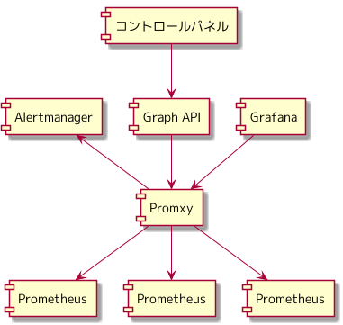
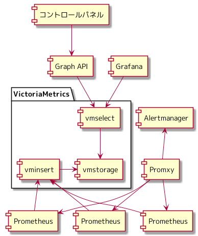
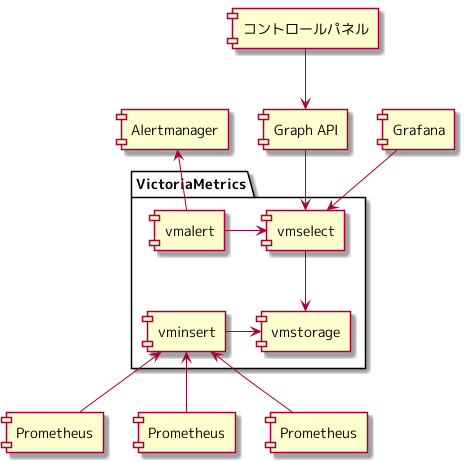

さくらインターネット Advent Calendar 2021 13日目の記事になります。
今日は、「さくらの専用サーバ PHY」にてメトリクス管理の基盤に、 VictoriaMetrics を使っているという話を書いていきます。
VictoriaMetrics のアーキテクチャやコンポーネントについての詳しい説明は、 公式ドキュメント や、 他の記事にお任せし、「さくらの専用サーバ PHY」のメトリクス管理の基盤が、どのような構成ではじまり、 現在どうなっているのか、これからどうしていこうと考えているのかについて書いていきます。
2020年7月時点の構成

「さくらの専用サーバ PHY」提供開始時のメトリクス管理・監視基盤の構成になります。
Promxy を使ったアーキテクチャ より、 Promxy にリクエストすることで、 Prometheus のメトリクスにアクセスする構成をとっています。
30日ぶんのトラフィックグラフをユーザーに提供するため、 Prometheus には30日ぶんのメトリクスを保存するようにしています。
Prometheus には remote write という機能があり、 取得したメトリクスを別のストレージに転送することが可能になっています。 長期的なメトリクスを保存する場合は、 Prometheus に保存するのではなく、 Prometheus の remote write を使い、 長期保存のためのストレージを使う構成をとることを推奨しています。
https://prometheus.io/docs/operating/integrations/#remote-endpoints-and-storage
このタイミングでは、 サービスを支えるシステム基盤のメトリクスをどのように管理するのか、 ユーザーに提供している機器をどのようにメトリクス管理するのか、 複数台ある Prometheus のメトリクスをどのように参照するのか、 というようなところを検証、実装していたところで、サービスの提供開始となりました。
長期的なメトリクスを保存するためのストレージを検証、導入する時間を確保できなかったため、 Promxy をエンドポイントに Prometheus のメトリクスにアクセスする構成をとりました。
利用者の増加とともに Prometheus は追加されていきます。 Promxy をエンドポイントに Prometheus のメトリクスにアクセスする構成で、 どこまでスケールできるのか未知のまま運用している状態でした。
Promxy が、 Grafana へのエンドポイント、ユーザーのトラフィックグラフへのエンドポイント、 アラート発砲と3つのサービスを提供しており、ダウンした場合の影響が大きいところも自分の中で引っ掛かっていました。
このまま運用し続けるのではなく、 Prometheus の remote write を使い、 推奨されている長期的なメトリクスを保存するストレージを使う構成にすることで、 Promxy から Prometheus のメトリクスを返すというサービスを減らし、ダウンした場合の影響を減らす、 スケールすることを考慮しているミドルウェアに移行することで、 安心して Prometheus をスケールしていきたいということを考えていました。
2021年7月からの構成

Prometheus の remote write 先の長期的なメトリクスを保存するストレージとして VictoriaMetrics を採用しました。
2021年1月から育児休業を予定しており、 自身の作り上げたシステム基盤に対するドキュメンテーションや引き継ぎに注力していたため、 2020年11月から VictoriaMetrics の検証を細々と進め、 どのように「さくらの専用サーバ PHY」のメトリクス管理基盤に組み込むかまでを設計し、育児休業に入りました。
2021年4月下旬から復帰し、 VictoriaMetrics を展開し、監視を設定し、切り替えの計画をたて、 2021年7月から VictoriaMetrics を使ったメトリクス管理の基盤が稼動しはじめました。
VictoriaMetrics のコンポーネントである vminsert に対して Prometheus は remote write することで、 VictoriaMetrics のコンポーネントである vmstorage にメトリクスが保存されます。
VictoriaMetrics のコンポーネントである vmselect をエンドポイントに、 ユーザーのトラフィックグラフ用のメトリクスを Graph API 経由で返したり、 Grafana でメトリクスを確認できます。
VictoriaMetrics は Prometheus と互換性のある HTTP API を提供しているため、 Graph API, Grafana ともにエンドポイントを切り替えるだけで、移行ができました。
https://docs.victoriametrics.com/#prometheus-querying-api-usage
Promxy から Prometheus のメトリクスを返すというサービスを減らすことができ、 ダウンした場合の影響を減らすことができました。 Promxy は、アラート発砲のみが、自身の仕事となりました。
これからどうしていこうと考えているか

まだやることは残っています。 Promxy を使ってのアラート発砲がどのくらいまでスケールするのかは未知です。 Promxy を使い続ける場合は、 Prometheus のバージョンアップに合わせて、 Promxy のバージョンアップも必要になってきます。
VictoriaMetrics には、 vmalert というコンポーネントがあり、 メトリクスを評価し、アラートを発砲する機能を持っています。 vmalert に移行することで、 Promxy の依存関係が無くなり、 Promxy の依存関係が無くなることで、 Prometheus からメトリクスを取得する依存関係が無くなり、 Prometheus は、取得したメトリクスを VictoriaMetrics に remote write するという仕事のみになります。
Prometheus で提供するサービスが減ることで、ダウン時の影響を減らすことができ、 Prometheus を参照するコンポーネントは無いため、新しいバージョンの Prometheus を remote write し、 古いバージョンの Prometheus を停止するという Prometheus のバージョンアップができそうな未来が見えます。
PromQL から MetricQL となるため、 PromQL で書いた、既存のアラート用の式の動作を確認していく作業や、 アラートを設定するチームメンバーへのレクチャーが必要そうな感じです。